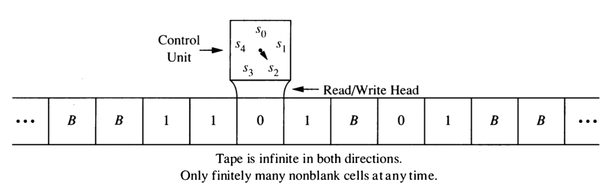

9 Turing Machines
The Turing machine model pre-dates electronic computers and comes from the work of Hilbert (early 1900’s) and Turing and Church (1930)’s.
- Not trying to model (electronic) computers, but computation or algorithm
- Identified three essential ingredients: ______________, _____________, __________________
- implicitly there is a fourth ingredient: ___________________
- The Turing machine is a specific formalization of these basic ingredients
9.1 Definition of a 1-tape Turing Machine (Syntax)
A Turing machine consists of the following:
- input alphabet: A set of symbols used for inputs.
- tape alphabet: Input alphabet plus and at least one additional symbol, the blank symbol.
- states: A finite set.
- initial/start state: one of the states to start in
- final states: some of the states are designated as final or accepting states. (In some variations there are two kinds of final states: accepting and rejecting.)
- program: A list of instructions. Each instruction has 5 parts:
<current tape symbol>: any tape symbol<current state>: any state<new tape symbol>: any tape symbol<new state>: any state<direction>: left, right, or stay
9.2 Execution of a Turing Machine program (Semantics)
Imagine a machine with a 2-way infinite tape divided into cells. Each cell contains exactly one symbol from the tape alphabet. At the start of the execution, the input is written on the tape, the read/write head is located at the left most symbol of the input, and all cells that don’t contain part of the input contain the blank symbol.

At each step in the execution of a Turing machine program, the read/write head is located at one cell of the tape. The program uses the current state and contents of the tape at that position to determine its action:
- write a symbol in the current cell (overwriting what was there before),
- move the head left or right (or stay put)
- update the state
This is repeated until one of two things happens:
- there is no instruction to execute, or
- the state is a final state
When either of these two things happens, the machine halts.
9.2.1 ASCII Representations of Turing Machines
There are several websites that provide Turing machine simulators. Here are a few:
- http://www.6by9.net/z/projects/turingMachine/turingMachineApplet/ – My favorite, but no longer usable since it was written in java by Calvin student Eliot Eschelman back when java applets were still a thing.
- http://morphett.info/turing/turing.html – plain output, and less flexible (initial state must always be called 0, for example), but the program encoding is terse.
- https://turingmachinesimulator.com/ – nice looking and more flexible, but each instruction takes up 3 lines (current state and tape symbol on one line; new state, direction, and new symbol on the next line; then a blank line)
Each uses a slightly different ASCII representation of a Turing Machine. They are all pretty similar but differ in
- How the input alphabet, tape alphabet, start state and accepting states are described
- How they represent the blank tape symbol. (Often there is a fixed symbol for this like
b,Bor_.) - Whether they are case sensitive, disallow certain characters, observe white space, etc.
- How left/right/stay are denoted
- The order in which the 5 parts of an instruction are given
- Which of various variations on the the 1-tape Turing machine theme they support (and how you tell the simulator which flavor
9.3 Examples
9.3.1 Example 1
; in style of <http://morphett.info/turing/turing.html>
; state symbol symbol direction state
; s0 is initial state
0 * * * s0
s0 0 0 r s0
s0 1 1 r s1
s0 _ _ r halt
s1 0 0 r s0
s1 1 1 l s2
s1 _ _ r halt
s2 1 0 r haltFor each input string below, determine the configuration (tape contents, location of read-write head, and state) of the Turing machine when it halts.
- \(\lambda\)
- 01
- 0101
- 010110
- 001
9.3.2 Example 2
; [init] is initial state
0 * * * [init]
[init] 0 0 r [10]
[init] 1 0 r [01]
[init] _ _ * halt-init
[00] 0 0 r [10]
[00] 1 1 r [01]
[00] _ _ * halt-00
[01] 0 0 r [11]
[01] 1 1 r [00]
[01] _ _ r [01]
[10] 0 0 r [00]
[10] 1 1 r [11]
[11] 0 0 r [01]
[11] 1 1 r [10]For each input string below, determine the configuration (tape contents, location of read-write head, and state) of the Turing machine when it halts.
- \(\lambda\)
- 0110
- 01111
- 01110
9.3.3 The language recognized by a Turing Machine
We will say that a Turing machine \(M\) accepts a string \(x\) (by state) if on input \(x\) it halts in a final state. The language recognized by a Turing machine is
\[ L(M) = \{x \mid M \mbox{ accepts } x\} \]
- What languages do the previous two machines recognize?
9.3.4 Designing a Turing Machine
Design a Turing machine that recognizes \((\boldsymbol{0} \cup \boldsymbol{1})\boldsymbol{1}(\boldsymbol{0} \cup \boldsymbol{1})^*\)
Design a Turing machine that recognizes \(\{0^n1^n \mid n \ge 0\}\). This shows that Turing machines can recognize languages that are not regular.
Turing machines can also compute functions. The output of a Turing machine is the tape contents when it halts.
Design a Turing machine that adds in unary. Use the input alphabet \(\{1,+\}\).
In unary, a non-negative integer \(n\) is represented by \(n+1\) 1’s. So 3 is represented as 1111.
Example: Our machine should convert
111+1111into ______________.
A Turing machine computes neatly if when it halts (a) the read/write head is on the left-most non-blank tape symbol (or any blank symbol if the tape is all blanks), and (b) there are no internal blanks (ie, all the non-blank symbols are contiguous on the tape).
- Modify your previous machine so that it computes neatly.
9.4 What Can Turing Machines Do?
9.4.1 Turing Computable Languages
A language \(L\) is Turing computable if it is recognized by some Turing machine that always halts, that is,
- \(L = L(M)\) for some Turing machine \(M\).
- \(M\) halts on every input. (If \(x\in L\) it halts in an accepting state.)
Show that every regular language is Turing computable.
[Hint: What must you do to demonstrate this?]
9.4.2 The Halting Problem
The Halting Problem is a famous example of a language that is not Turing computable. By the Church-Turing Thesis, this would mean it is not computable by any means.
Why is it called the Halting Problem, you ask, instead of the Halting Language? This goes back to a description of languages as answers to yes/no questions. Each such problem (ie, language) an be described by an instance and a question. Here are some examples:
Euler
- Instance: A Graph \(G\)
- Question: Does \(G\) have an Euler Circuit?
3-Colorability
- Instance: A Graph \(G\)
- Question: Is \(G\) 3-colorable? (Can we color the vertices with 3 colors so that no adjacent vertices are the same color.)
SAT
- Instance: A first order logical formula \(\varphi\) (made with \(\land\), \(\lor\), \(\neg\) and some logical variables).
- Question: Is \(\varphi\) satisfiable? (Can we set the variables to TRUE/FALSE in a way that makes the entire formula true?)
Implicit in each of these descriptions is some encoding scheme by which the objects mentioned in the instance are coded as bit strings. Typically, if we are only interested in whether a problem is Turing computable or not, it does not matter which coding scheme is used as long as it is systematic.1
An entire book (Garey and Johnson 1979) of such problems (and whether or not they were NP-complete) was produced in the 1970’s by Garey and Johnson and popularized this description. So you will see languages referred to as problems throughout the CS literature.
Here is a description of the Halting Problem.
- Instance: A Turing Machine \(M\) and an input string \(x\).
- Question: Does \(M\) stop on input \(x\)? (This is written \(M(x) \downarrow\).)
- Show that that Halting Problem is not Turing computable.
9.4.3 Variations on the Turing Machine
There are many variations on the Turing machine. Here are some examples.
Instead of having a single tape, a Turing machine can have multiple tapes.
Instead of being 2-way infinite, the tape(s) can have a left end. These are called 1-way infinite tapes.
Turing machines may be required to move the head at each step (so “stay” is not an option).
Multi-track tapes aren’t really a variation, but a handy way of thinking about a tape alphabet. (And some simulators makes this easy to do.) Since the tape alphabet may be anything, if we want to simulate writing two symbols from \(A\), we can use a tape alphabet of \(A \times A\) or even \(A \cup (A \times A)\). One element of \(A \times A\) represents two elements from \(A\) (one on the “top track” and one on the “bottom track”).
Instead of having a 1-dimensional tape, a tape can be a 2-dimensional grid of cells. The read/write head can move up and down in addition to left and right.
Each of these variations is equivalent to the standard Turing machine with one 2-way infinite tape. So are many other models of computation. This has led to the so-called Church-Turing Thesis. Here is one statement of that thesis:
A function on the natural numbers is computable by a human being following an algorithm, ignoring resource limitations, if and only if it is computable by a Turing machine.
Give a high level description of how to convert a Turing machine with 2-way infinite tape into a Turing machine with a 1-way infinite tape.
Give a high level description of how to convert a 2-tape machine into a 1-tape machine.
Nested Parens Write a Turing machine recognizes all strings that use the input alphabet \(\{(, ), *\}\) and the parentheses are properly nested. (The asterisks may be anywhere.)
- First try this with a two-tape machine.
- Then try this with one two-track tape.
- For an extra challenge, try doing it with a one-tape machine with tape alphabet \(\{(, ), *, \# \}\)
9.5 Running time of a Turing machine
The running time of a Turing machine on input \(x\) is the number of steps before it halts. The conversions above typically change the running time, but machines that run in polynomial time are converted into machines that run in polynomial time (typically with a different degree polynomial).
9.5.1 P and NP
This provides a formal definition of the famous set \(P\). \(P\) is the set of all languages that can be recognized by a Turing machine in polynomial time, that is, the number of steps the machine takes on an input of length \(n\) is bounded by \(p(n)\) for some polynomial \(p\).
A non-deterministic Turing machine can have multiple transitions from the same state/tape contents configuration. A non-deterministic TM accepts an input \(x\) if there is a way of choosing transitions that causes the machine to halt in a final state. (This is similar to how non-deterministic automata were defined). \(NP\) is the set of all languages that can be recognized by a non-deterministic Turing machine in polynomial time.
The “\(P\) vs. \(NP\) question” is whether \(P\) and \(NP\) are the same or different. To date, this question is unresolved.2
Garey, M. R., and David S. Johnson. 1979. Computers and Intractability: A Guide to the Theory of Np-Completeness. W. H. Freeman.
Solving this could make you both rich and famous.↩︎